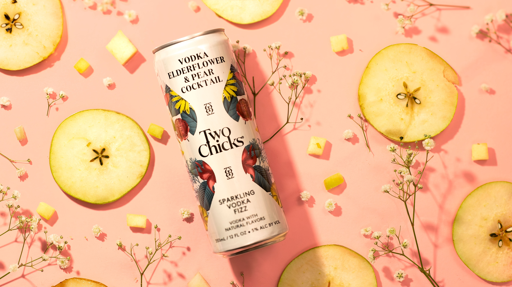

Floral Set
Shot against a natural floral backdrop, each can styled with its matching botanicals.


Product Photography · Art Direction
A product shoot for Two Chicks sparkling cocktails, built and photographed from scratch. Fresh ingredients, soft florals, and bright color backdrops were chosen to reflect the brand's light, botanical flavors. The goal was playful and approachable, without losing the polish a product shot demands.
Shot against a natural floral backdrop, each can styled with its matching botanicals.
Overhead flatlays on a pink backdrop, each flavor surrounded by its signature fresh ingredients.
